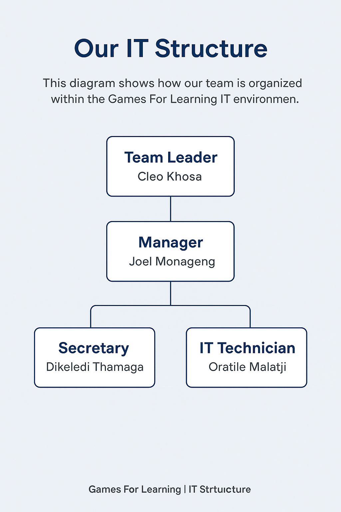

Our IT Organizational Structure
The diagram below represents the IT support structure of the Games For Learning intranet system, showing who reports to whom and how each role contributes to smooth operations.

Roles and Responsibilities
- Team Leader (Cleo Khosa): Oversees all IT and administrative operations, ensuring clear communication and effective workflow between departments.
- Manager (Joel Monageng): Coordinates staff, manages IT projects, and ensures adherence to SOP and security protocols.
- Secretary (Dikeledi Thamaga): Handles official documentation, schedules, and assists with communication between team members and departments.
- IT Technician (Oratile Malatji): Provides technical support, network maintenance, and ensures system functionality for all users within the organization.